TiagoCruz
Programador Full Stack · com foco em backend
Backend no trabalho. Jogos nas horas vagas.
Escolher um nível mover jogar
Programador Full Stack · com foco em backend
Backend no trabalho. Jogos nas horas vagas.
Escolher um nível mover jogar
Nível 0 Começar aqui
Sou o Tiago, programador full stack com foco em backend. Trabalho profissionalmente desde abril de 2025, sobretudo com PHP e Symfony.
Estudei Comunicação e Multimédia na UTAD, onde fiz as minhas primeiras aplicações web.
Fora do trabalho faço os meus próprios projetos do princípio ao fim: um site de restaurante que está no ar e um jogo para telemóvel em Godot.
Comunicação e Multimédia na UTAD, a Universidade de Trás-os-Montes e Alto Douro.
Programador Full Stack, com foco em backend. O primeiro emprego e onde trabalho hoje.
E os meus próprios projetos: os três níveis deste mapa.
Porque gosto. E porque um jogo é um produto inteiro, do princípio ao fim: a jogabilidade, o trailer, o site e a ficha da loja, tudo feito por mim.
Neste momento é a Tasca do Zé, um jogo para telemóvel que estou a fazer sozinho, em Godot 4.7, e que chega em breve ao Google Play.
Nível 1 Em curso
Um sistema de gestão de conteúdos com uma API REST em Symfony e um painel de administração em Vue 3. Os editores constroem páginas a partir de blocos, agendam-nas e guardam todas as revisões, e os rascunhos ficam privados.
Quatro formas de tentar entrar num CMS. Basta escolher uma para a enviar. Todas as respostas abaixo são respostas reais da API.
Bloqueadas 0 de 4
Dados de exemplo. Os códigos de estado, as mensagens e as regras são os da API e dos seus testes.
Nível 2 Em produção
Um site para um restaurante buffet, em produção. Uma página responsiva em várias línguas e um back-office onde o restaurante gere as ementas do dia e da semana. Feito só por mim.
Quatro paragens no back-office do restaurante. Basta escolher uma para ver o que o restaurante gere a partir dali.
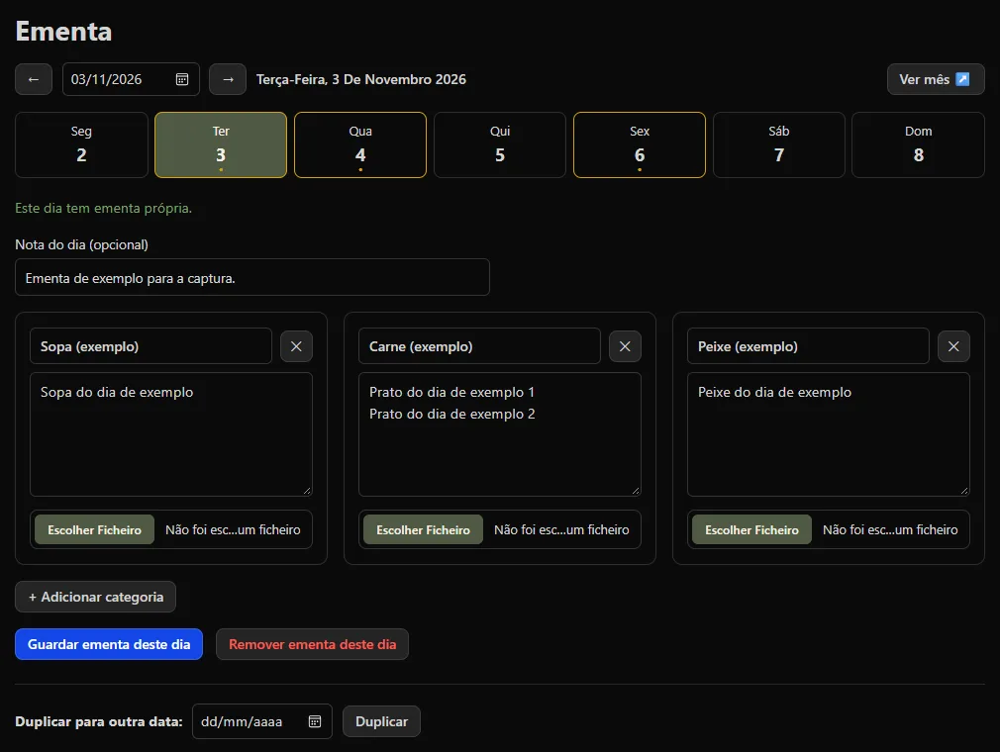
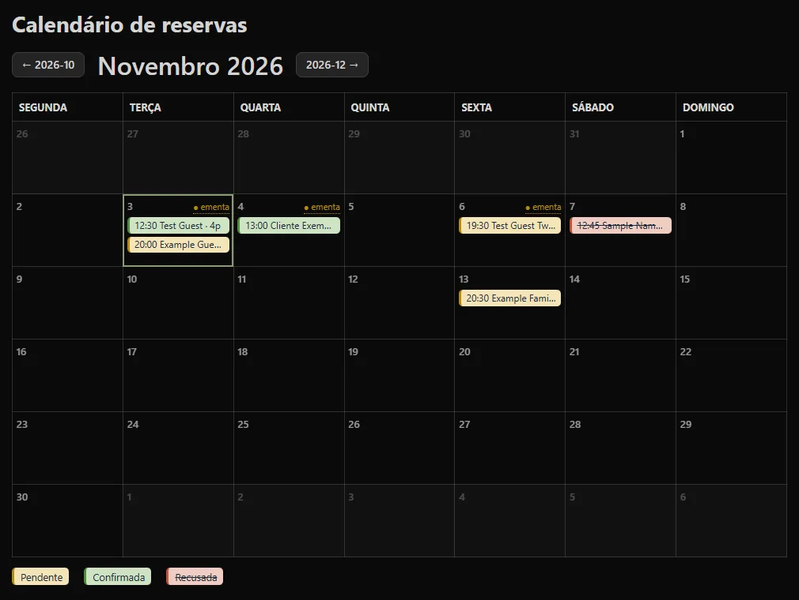
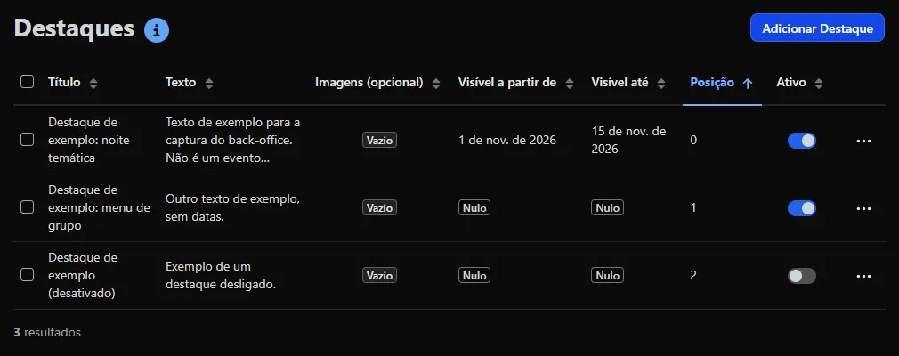
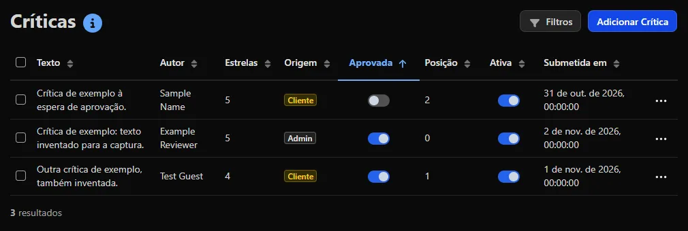
Visitadas 0 de 4
Só dados de demonstração: capturas de uma cópia local. O back-office real tem dados dos clientes, por isso fica privado.
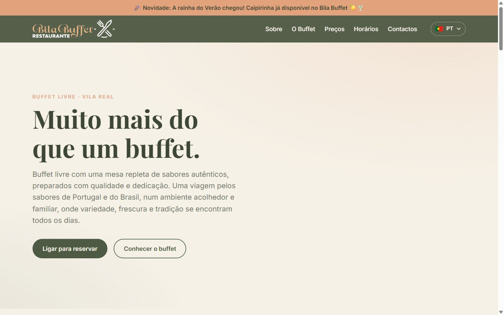
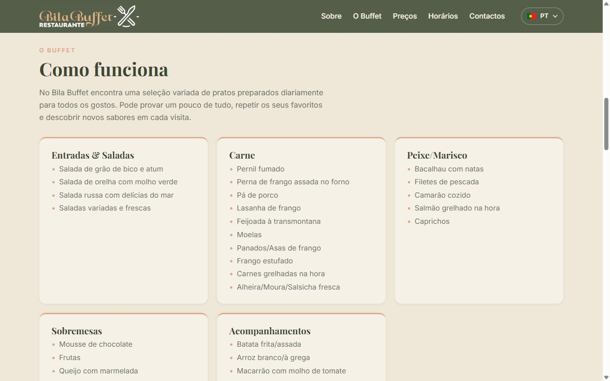
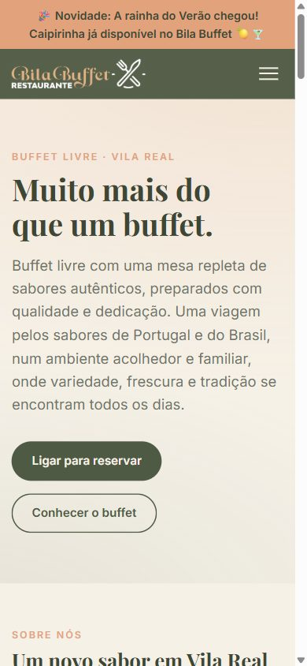
Nível 3 Em desenvolvimento
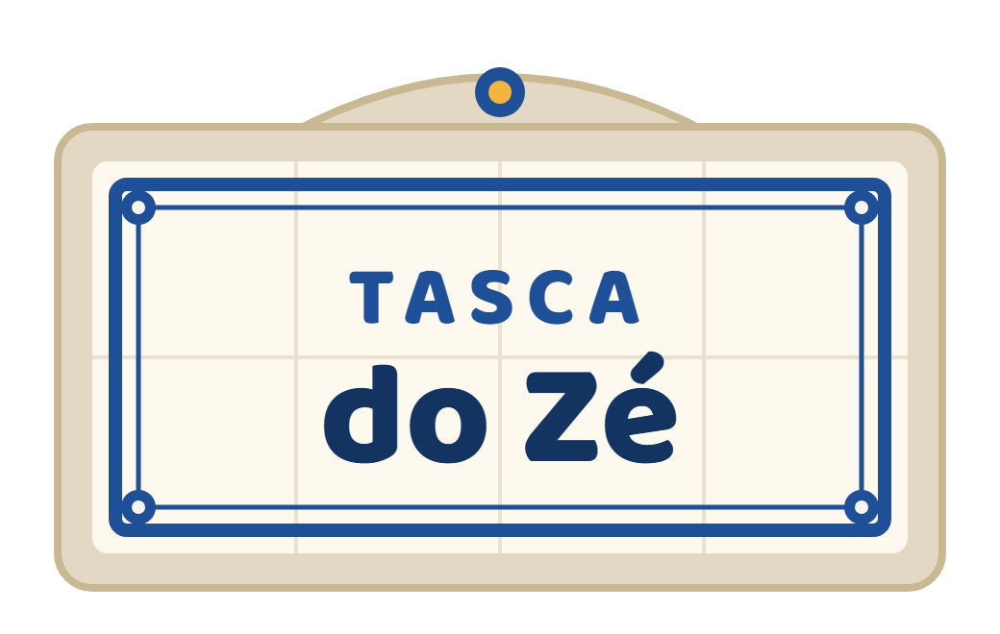
“Zé, o país é grande.”
O jogador herda a tasca do avô em Bragança: tira finos, serve bifanas, apanha o ladrão com a vassoura e abre tascas pelo país fora, de Bragança a Faro.
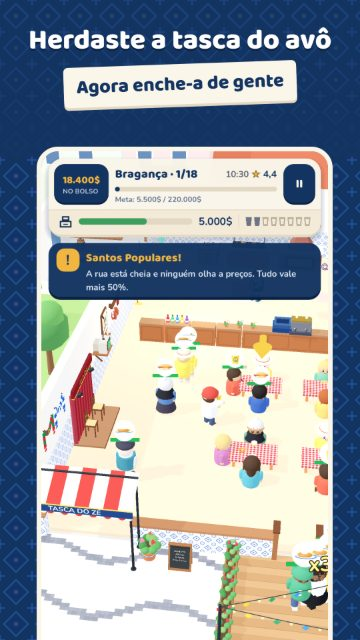
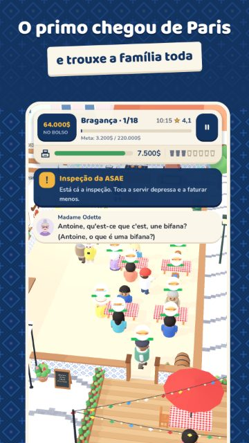
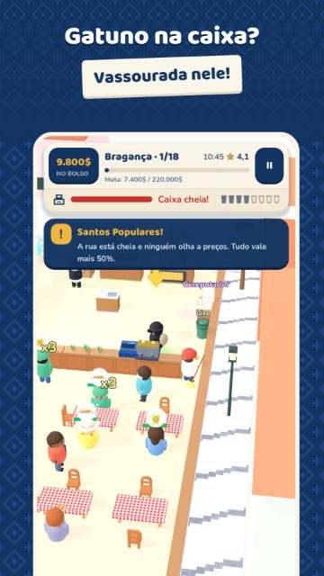
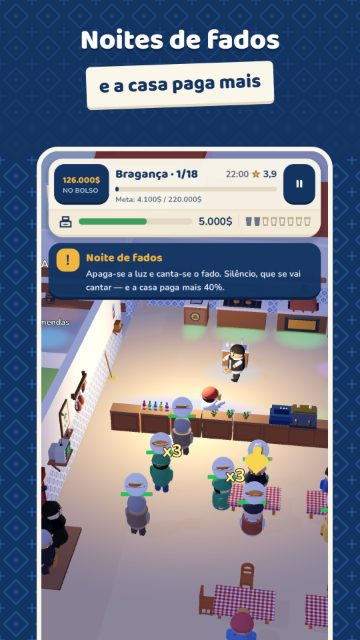
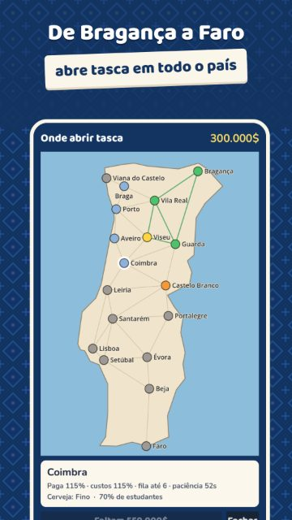
Nível 4 Trancado
O próximo projeto está a ser planeado. Desbloqueia-se aqui quando houver algo real para mostrar.
Jogo para Android · gratuito · Godot 4.7
Site de restaurante · Symfony 7.3 · projeto a solo
API REST em Symfony 6.4 · regras de acesso
API REST em Symfony e painel de administração em Vue 3
Full stack: PHP e Symfony